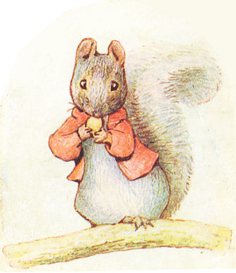
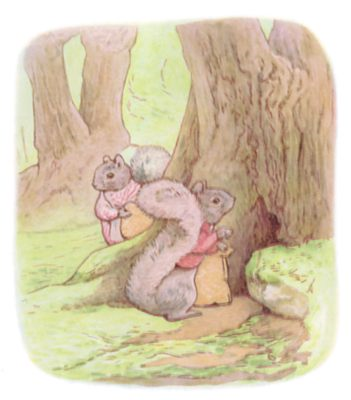
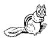
モニカを はじめとする まだみぬ ちいさな おともだちへ
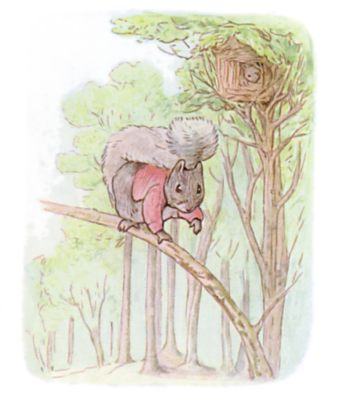
むかしむかし あるところに つまさきチミーという ころころぷくぷく おきらくな はいいろりすが おりました。 たかい きの てっぺんに くさぶきの すみかがあって、 グディという おくさんの りすも います。
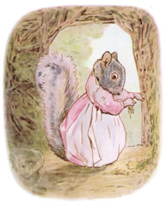
つまさきチミーは そとで すわって、 そよかぜを たのしんでいました。 しっぽを ひとふりして くすくすわらい ―― 「いとしの グディ、 きのみが たわわだ。 ふゆ・はるのために たくさん たくわえておこうよ。」 つまさきグディは いえの うちがわに こけを ぬりこめるのに ていっぱいです。「このおうち、 いごこちいいから きっと ひとふゆ ぐっすり ねむれるわ。」「そんなら おきたら そのぶん げっそり、 はるには たべもの ないってか。」チミーは なんでも きにしがち。
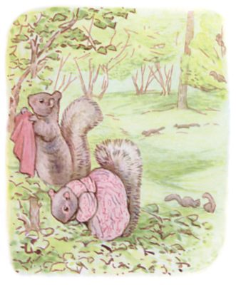
きのみの やぶへ やってきた チミーと グディでしたが、 見てみると そこには もう ほかの りすたちが いまして。
チミーは うわぎを ぬいで こえだに ひっかけ、 はなれたところで おとなしく ふたりだけで うごくことにします。
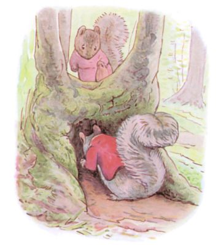
まいにち あちこち めぐって きのみを めいっぱい ひろいました。 ふくろに つめてはこんで、 すを つくった きのそばに あちこちある ねもとの あなぽこに つめたのです。
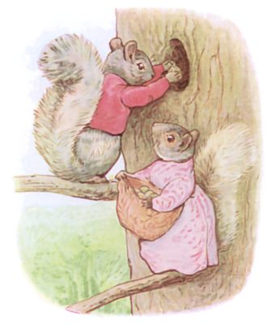
あなぽこが まんぱいになると、 こんどは きの たかいところに ある うろあなへと ふくろを あけはじめました。 もとは きつつきの もので、 きのみは ころりん ころころと なかへ おちていきます。
「いったい どうやって あとから とりだすの？ ちょきんばこみたい！」と グディ。
「はるに なるまでには げっそり やせてるって、 なあ。」と あなを のぞく つまさきチミー。
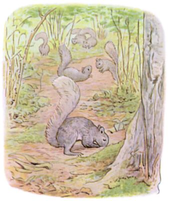
こうして たくさん あつまりましたが ―― そのひけつは なくさなかったからなのです！ ふつう りすは きのみを じめんに うめるから、 はんぶんは なくしてしまうもの。 だって ありかが おぼえられなくって。
もりで いちばんの わすれんぼの りすは、 シルヴァテルと いいました。 ほってるそばから わすれるから、 あとで ほりかえすと じぶんのでない きのみが でてきたりして。 それで けんかに なったり。 すると みんなして ほりだすから ―― もりじゅうが おおさわぎ！
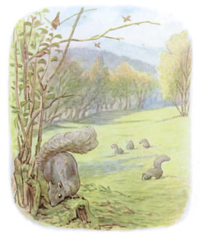
そんなとき おりあしく ちょうど ことりの むれが とんできていて、 やぶから やぶへ あおむしや くもを さがしまわっていました。 いろんな とりが いて、 それぞれ べつべつの うたを さえずるのです。
はじめの とりは こう。「だあれが ほりだした、 ぼおくの きのみ。 だあれが ほりだした、 ぼおくの きのみ。」
つぎの うたは こう。「パあンが ちょびっと、 チーズなし。 パあンが ちょびっと、 チーズなし。」
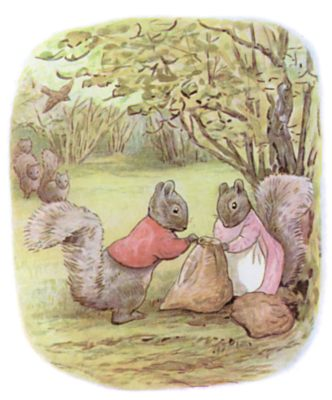
りすたちが みんなして おいかけ、 みみを そばだてます。 はじめの とりが とびこんだ やぶでは、 チミーと グディが しずかに ふくろを しばっていました。 そこへ ことりの うたです ―― 「だあれが ほりだした、 ぼおくの きのみ。 だあれが ほりだした、 ぼおくの きのみ。」
つまさきチミーは きにもせず やることを ひたすらやるだけ。 そもそも ことりにしても だれのことを うたうでもなく、 いつもどおりに うたっているだけで、 どういうつもりも ありません。

けれども まわりの りすたちは そのうたを きくと たばになって つまさきチミーに とびかかり、 なぐる、 ひっかく、 きのみの ふくろを ひっくりかえす。 さて はからずも このさわぎの もとを つくってしまった ことりですが ぎょっとして とびさってしまって！
チミーは くるくる ごろごろ ころがりましたが、 そこから しっぽを かえして、 すみかの ほうへ にげだしました。 おいかけてくる りすのむれが わめいています ―― 「だあれが ほりだした、 ぼおくの きのみ！」
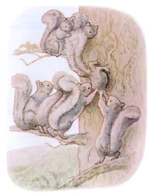
やがて チミーは つかまり、 きのうえに ひきあげられて。 しかも そのきは あの まんまる こあなの あるやつで、 そこに おしこまれて。 あなは つまさきチミーには あまりに せますぎて、 ひどく ぎゅうぎゅう つめられたから、 あばらが おれなかったのが ふしぎなくらい。「はくじょうするまで ほっとこうぜ。」と りすりすシルヴァテルは いってから、 あなのなかへ こう さけびます ――
「どいつが ほりだした、 おおれの きのみ！」
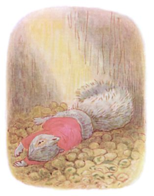
つまさきチミーは なにも こたえません。 きのなかを ころがりおちて、 じぶんの いれた なみなみした きのみの うえへ がしゃん。 すっかり きをうしなって たおれて うごけません。
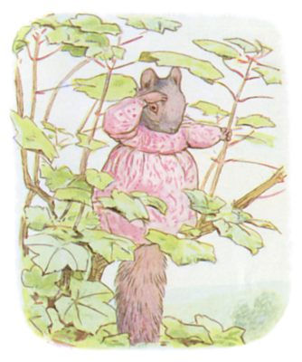
つまさきグディは きのみの ふくろを みんな ひろいあげ、 うちへ かえりました。 チミーのために おちゃを いれたのに、 もどってこない こない。
そのひの よるは つまさきグディも さみしくて つらくって。 あくるあさ おもいきって きのみの やぶに ひきかえし さがしてみようとしたのですが、 ほかの りすたちから いじわるく おいはらわれてしまいました。
もりじゅうを さまよいながら よびかけます。
「つまさきチミー！ つまさきチミー！ ねえ、 いったい どこに いるの？」
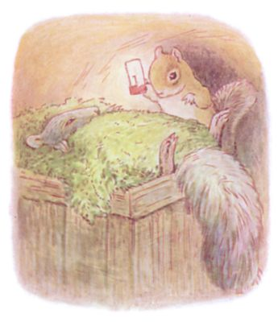
そうこうするうち つまさきチミーも きを とりもどします。 めを あけると ちいさな こけの ベッドに ふんわり くるまれていて、 まっくらやみのなか あちこち ずきずき。 どうも じめんのなかの ようでした。 チミーは げほげほ うぐうぐ、 あばらが いたみます。 すると きゃっきゃと こえが して、 そこへ あらわれたのが ちいさな しまりすさん、 てに あかりを もって、 ぐあいが よくなったかと みにきたのでした。
しまりすさんは つまさきチミーに とても よくしてくれて。 ねぼうしを かしてくれたばかりか、 うちのなかは たべものも どっさり。
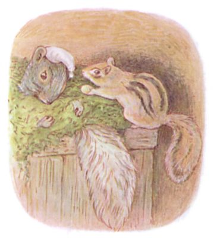
しまりすさんは はなします。 なんでも きの てっぺんから ざあざあ きのみが ふってきたのだとか ―― 「しかも うまってるのまで あってさ！」 そこで チミーが いきさつを はなすと りすさんは けらけら くふくふ。 チミーが ベッドから うごけないのを いいことに、 なにかと わけを つけて、 たらふく たべさせようとして。「でも、 どうやって ここから でるって いうんだい？ おいらが やせないことにゃあ。 よめさんだって きっと しんぱいしてる。」「あと もうひとつ ―― いや もうふたつ。 わらせておくれよ。」なんて しまりすさんが いうもんだから、 つまさきチミーは ぷくぷく ふとるばかりで。
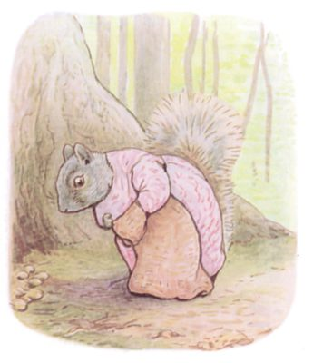
さて つまさきグディといえば、 ひとりきりで また しごとに とりかかっていました。 でも もう きつつきの あなには いれたりしません。 だって どう とりだしたものかと ずっと くびを かしげていたのですから。 かくすさきは きのねの したで、 ころりんころりん おとしていって。 あるとき グディが とくべつ めいっぱいの ふくろを あけてみると、 ぎゃあという こえが はっきり きこえました。 それから つづけて グディが ふくろを もうひとつ もってくると、 ちいさな しまりすが あわてて そとに はいだしてきて。
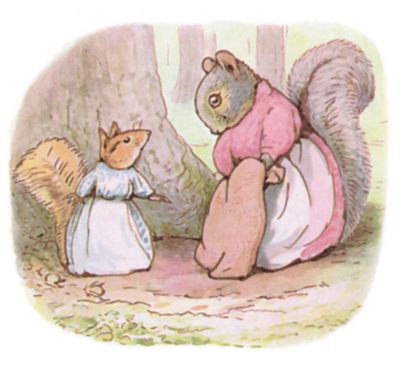
「かいだんの したは そろそろ いっぱい いっぱいなの。 へやも まんぱいで、 ろうかにまで ごろごろ ころがってる。 しかも だんなの しまりすハッキーは わたしを おいて いえでちゅう。 この きのみの あめあられは いったい どういうわけ？」
「ほんとうに ごめんなさい。 わたし しらなくて、 ここに だれか おすまいだなんて。」と つまさきグディさん。「それにしても、 だんなさんの いどころですか。 うちの だんな、 つまさきチミーも いえでちゅうで。」「いどころは わかってるの。 ことりが おしえてくれて。」と こたえるのは しまりすの おくさま。
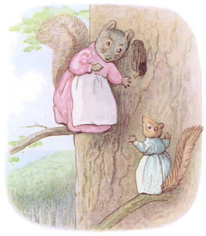
しまりすさんは きつつきの きへ みちあんないして、 ふたりして あなへ ききみみを たてます。 すると したのほうで きのみの からを わる おとが して、 それから りすの ふとい こえと ほそい こえが いっしょになって うたっていて。
「うちの じじいと おれが けんかした
さあて こいつを どう かたつける？
おまえの すきに させてやるから
とっとと うせろや このくそじじい！」
さあて こいつを どう かたつける？
おまえの すきに させてやるから
とっとと うせろや このくそじじい！」
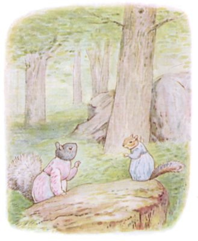
「あなたなら おしはいれてよ、 あのちいさな まるい あな。」と つまさきグディは いいました。「そうなんだけど。」と しまりすさん。「だんなの しまりすハッキーが かみついてくるの！」
したのほうから きのみを わって かじる おと、 それから りすの ふとい こえと ほそい こえの うたが きこえてきて ――
「きょうは いちにち だーらだら
だーらだらったら だーらだら！
だーらだらだら いちんちじゅう！」
だーらだらったら だーらだら！
だーらだらだら いちんちじゅう！」
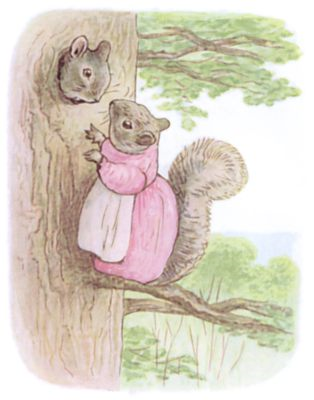
そこで グディは あなから なかを のぞいて、 したに よびかけました ―― 「つまさきチミー！ ん、 もう、 つまさきチミー！」 すると チミーが こたえます。「おまえか、 つまさきグディか？ おお そうか！」
あがってくるなり あなから かおを だして、 グディに キスを して。 けれども ふとりすぎで やっぱり そとに でられません。
しまりすハッキーは そこまで ふっくらしてませんが、 こっちは こっちで でたくないのです。 ですから したのほうで じっとして くふくふ わらっていて。
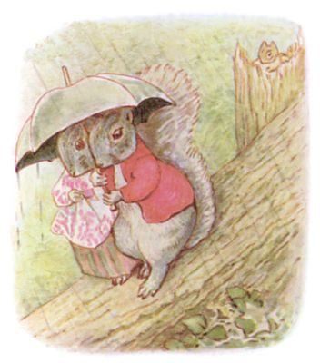
というわけで ２しゅうかんのあいだは そのままでしたが、 とうとう おおあらしが やってきて、 きの てっぺんを ふきとばし、 うえに おっきな あなが あいて、 なかへは あめが はいりほうだい。
ですので つまさきチミーは そとへ でまして、 かさを てに うちへ かえりました。
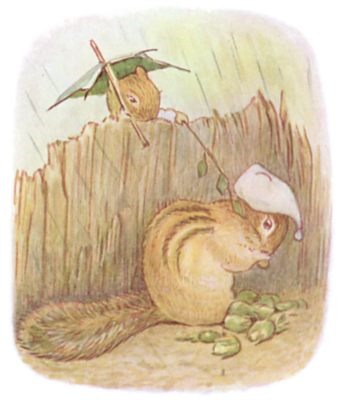
ところが しまりすハッキーは もう１しゅう のじゅくを つづけまして、 とはいえ、 やっぱり おちつかなくって。
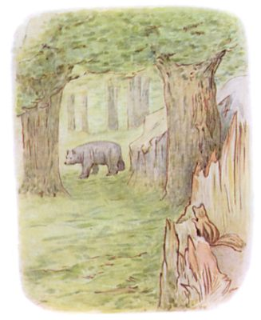
はてには おおきな くまが もりを ぬけようと ちかくを のっしのっし。 ひょっとすると そいつも きのみを さがしてるのかも。 あたりを かぎまわっているみたいで。
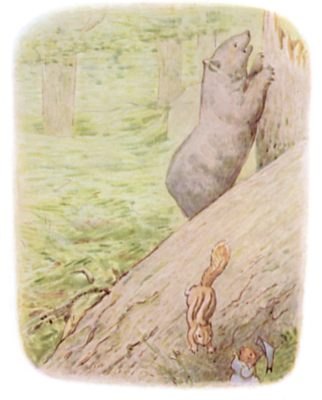
しまりすハッキーも おおあわてで おうちへ かえります！
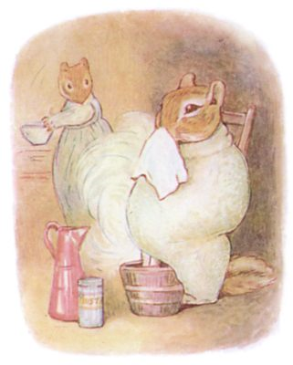
こうして うちへと ついた しまりすハッキーでしたが、 どうも はなかぜを ひいてしまったようで。 まったく、 おちつかないったら ありゃしない。
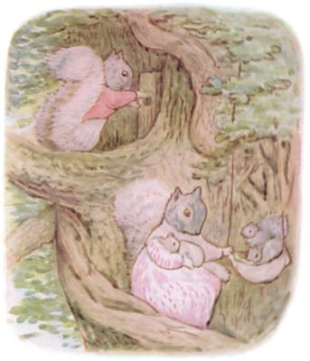
さて つまさきチミーと グディの ふたりと いえば、 きのみを ためておく ところに ちっちゃな かぎを つけて、 しっかり とじまりすることに しました。
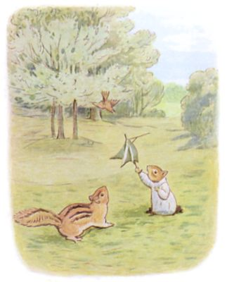
それから あのことりは しまりすを みかけるたびに、 こう うたいます ―― 「だあれが ほりだした、 ぼおくの きのみ。 だあれが ほりだした、 ぼおくの きのみ。」 けれども やっぱり、 こたえる ひとは いないのでした！
（おしまい）